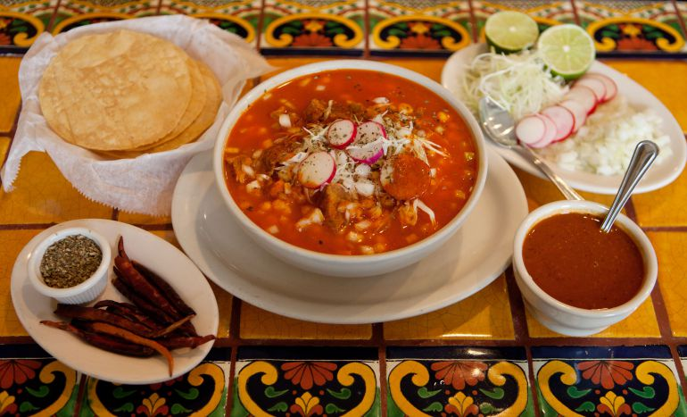

| Gastronomía | Restaurantes |  |
| Sidrerías y asadores | ||
| Bodegas de vino y txakoli |  |
|
| Productos Típicos | ||
| Escuelas de hostelería | ||
| Cultura | Archivos y Bibliotecas | |
| Museos | ||
| Palacios de Congresos | ||
| Ferias de Muestras | ||
| Ocio | Entretenimiento y Diversión | |
| Ocio Cultural | ||
| Excursiones y Deporte | ||